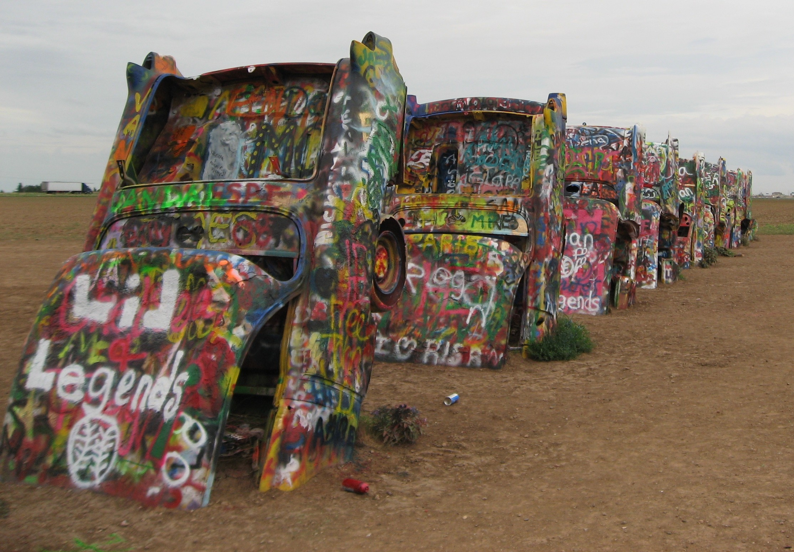
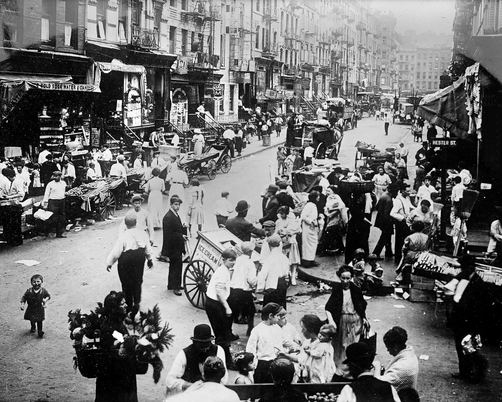
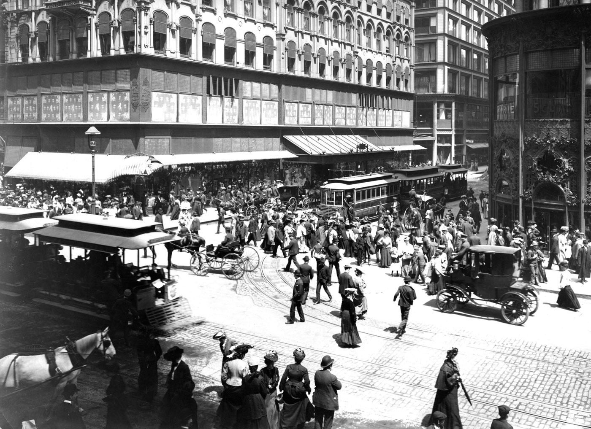
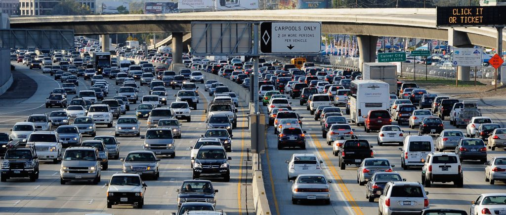
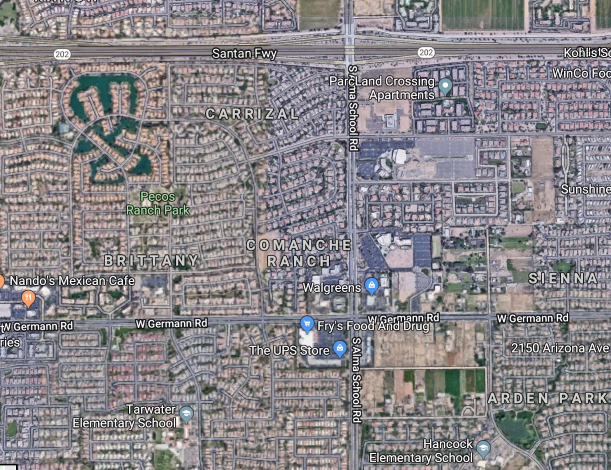
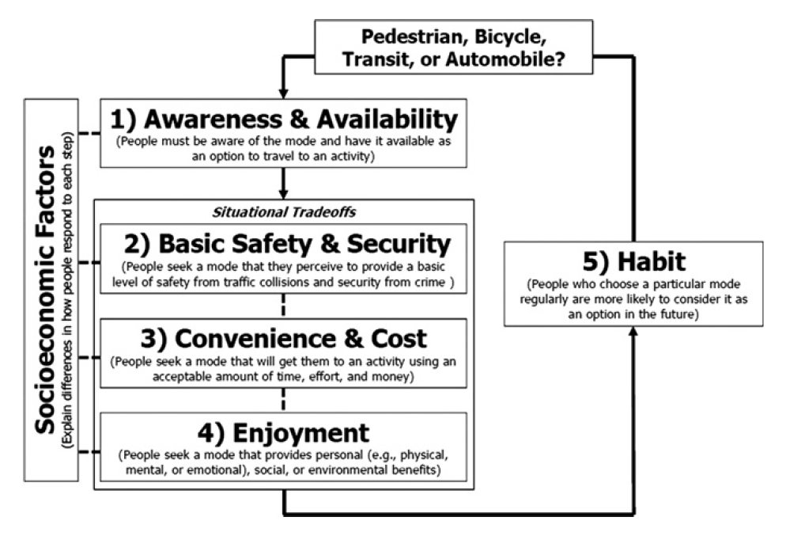
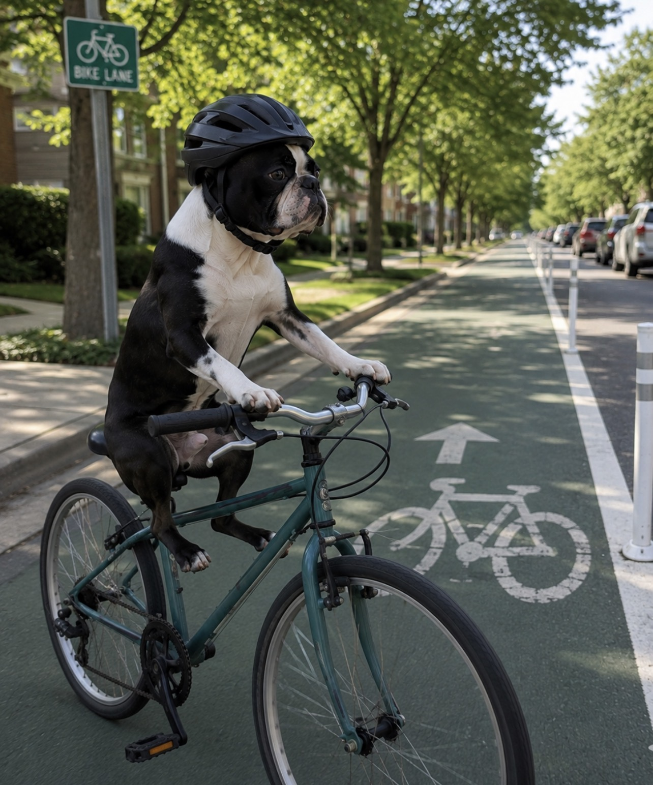
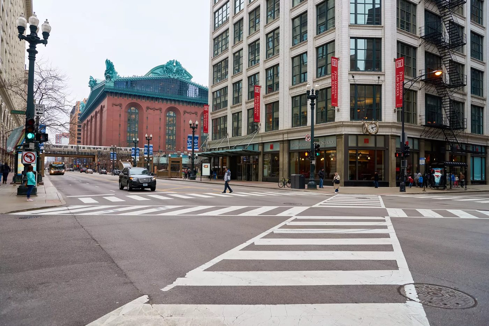

Week 7 (10/27): Just transportation (Refined project proposal)
Week 8 (11/3): Transportation and public health (Exercise #3 due; Exercise #4 assigned)
Week 9 (11/10): Economic benefits of sustainable transportation
Week 10 (11/17): Advocating for sustainable transportation systems (Exercise #4 due)
Finals week (11/24): Group project presentations
Final projects, outstanding assignments due Friday, 11/27 by end of day
Introductions
Name
Degree program
Preferred mode of travel

Cadillac Ranch, July 9, 2008, photograph, Amarillo, Texas. Source: C. Scott Smith
What Is Sustainability?
Individually consider your own understanding of sustainability
Use the link below to submit three (or more) sustainability concepts
Break out into groups of 3
Spend 5 minutes sharing your ideas of sustainability
Add any additional concepts/words using the same link
QR Code for poll. PollEv.com/urbantransport
What Is a Transportation System?
A system is an interconnected set of elements that is coherently organized in a way that achieves something. A system consists of three kinds of things: elements, interconnections, and a function or purpose. (Meadows, 2008)
In its simplest form, a transportation system consists of vehicles/modes, paths/networks and behaviors.
Like all systems, transportation systems are also situated in time (i.e., historical) and space/place and exhibit adaptive, dynamic, goal-seeking, self-preserving, and sometimes evolutionary behavior.
July 19, 2024, time-lapse video, London, England. Source: C. Scott Smith
In-Class Assignment #2
Watch the archival street film of a trip down Market Street, San Francisco 1906
What transportation modes are represented in the video?
How would you characterize this transportation system?
To what extent does this transportation system have elements of sustainability? Explain.
What information would you need to know to help evaluate (and potentially improve) the performance of this transportation system?
A Trip Down Market Street, San Francisco, 1906.
Streets as Public Space

Manhattan’s Hester Street, Lower East Side, 1914. Source: Getty Images
Early Urban Transit

Various forms of transit in 1904 at State and Madison Streets, Chicago, with two cable car trains. Source: Chicago’s Forgotten Cable Cars
The Automobile Era
The 1950s through 1990s is marked by geographic dispersion of housing and employment and the provision of automobile infrastructure to serve it.
“If you plan for cars and traffic, you get cars and traffic. If you plan for people and places, you get people and places.” — Fred Kent, 2005

Los Angeles Freeway circa early 2000s. Source: C. Scott Smithg

Gilbert, Arizona. Source: Google Maps
Theory of Routine Mode Choice
Schneider (2013), Transport Policy

Five-step operational framework for routine mode choice decisions (Schneider, 2013)
In-Class Transportation Mode Choice Activity
Individual reflection. Consider one routine trip you make regularly.
Awareness/Availability — Which modes do you actually consider? Are there modes you rarely think about?
Safety/Security — Does a safety concern rule out any mode?
Convenience/Cost — What’s the biggest factor pushing you to your usual transportation mode?
Enjoyment — Do you enjoy walking/biking generally, even if you don’t use it for this trip?
Habit — Is your choice automatic? When did you last reconsider it?

Midge riding bicycle, photograph, Oak Park, Illinois. Source: C. Scott Smith
Part 2: Pair / Small-Group Discussion
Compare answers in groups of 2–3:
Where’s the real barrier for you — awareness, safety, convenience/cost, enjoyment, or habit? Same across the group, or different?
Socioeconomic factors — how would your answers change with different income, physical ability, household size, or life stage?
Life events — has a past transition (moving, new job, school) ever changed your habit? What would break your current one?
What single strategy from Table 2 (secure bike parking, individualized marketing, protected bike lanes, reduced parking, street trees) would move you past your barrier?
Because people are blocked at different steps for different reasons, a single intervention rarely shifts community-wide mode share — a comprehensive approach across all five steps is usually needed.
Applied Example: The Leading Pedestrian Interval

Pedestrian scramble at State and Jackson, Chicago
A Leading Pedestrian Interval (LPI) typically gives pedestrians a 3–7 second head start when entering an intersection with a corresponding green signal in the same direction of travel.
LPIs have been shown to reduce pedestrian-vehicle collisions as much as 60% at treated intersections.
A bicycle signal head paired with a “turning vehicles yield” sign — another low-cost signal treatment